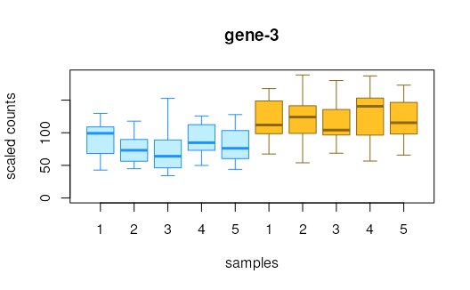

R/swish.R
swish.RdThe Swish method, or "SAMseq With Inferential Samples Helps".
Performs non-parametric inference on rows of y for
various experimental designs. See References for details.
swish(
y,
x,
cov = NULL,
pair = NULL,
interaction = FALSE,
cor = c("none", "spearman", "pearson"),
nperms = 100,
estPi0 = FALSE,
qvaluePkg = "qvalue",
pc = 5,
nRandomPairs = 30,
fast = 1,
returnNulls = FALSE,
quiet = FALSE
)a SummarizedExperiment containing the inferential replicate matrices of median-ratio-scaled TPM as assays 'infRep1', 'infRep2', etc.
the name of the condition variable. A factor with two levels for a two group analysis (possible to adjust for covariate or matched samples, see next two arguments). The log fold change is computed as non-reference level over reference level (see vignette: 'Note on factor levels')
the name of the covariate for adjustment.
If provided a stratified Wilcoxon in performed.
Cannot be used with pair (unless using cor)
the name of the pair variable, which should be the
number of the pair. Can be an integer or factor.
If specified, a signed rank test is used
to build the statistic. All samples across x must be
pairs if this is specified. Cannot be used with cov
(unless using cor)
logical, whether to perform a test of an interaction
between x and cov. See Details.
character, whether to compute correlation of x
with the log counts, and signifance testing on the correlation
as a test statistic.
Either "spearman" or "pearson" correlations can be computed.
For Spearman the correlation is computed over ranks of x and
ranks of inferential replicates. For Pearson, the correlation is
computed for x and log2 of the inferential replicates plus pc.
Default is "none", e.g. two-group comparison using the rank sum test
or other alternatives listed above.
Additionally, correlation can be computed between a continuous variable
cov and log fold changes across x matched by pair
the number of permutations. if set above the possible number of permutations, the function will print a message that the value is set to the maximum number of permutations possible
logical, whether to estimate pi0
character, which package to use for q-value estimation,
samr or qvalue
pseudocount for finite estimation of log2FC, not used
in calculation of test statistics, locfdr or qvalue
the number of random pseudo-pairs (only used with
interaction=TRUE and un-matched samples) to use to calculate
the test statistic
an integer, toggles different methods based on speed
(fast=1 is default, 0 is slower). See Details.
logical, only return the stat vector,
the log2FC vector, and the nulls matrix
(default FALSE)
display no messages
a SummarizedExperiment with metadata columns added:
the statistic (either a centered Wilcoxon Mann-Whitney
or a signed rank statistic, aggregated over inferential replicates),
a log2 fold change (the median over inferential replicates,
and averaged over pairs or groups (if groups, weighted by sample size),
the local FDR and q-value, as estimated by the samr package.
interaction:
The interaction tests are different than the
other tests produced by swish, in that they focus on a difference
in the log2 fold change across levels of x when comparing
the two levels in cov. If pair is specified, this
will perform a Wilcoxon rank sum test on the two groups
of matched sample LFCs. If pair is not included, multiple
random pairs of samples within the two groups are chosen,
and again a Wilcoxon rank sum test compared the LFCs across groups.
fast:
'0' involves recomputing ranks of the inferential replicates for
each permutation, '1' (default) is roughly 10x faster by avoiding
re-computing ranks for each permutation.
The fast argument is only relevant for the following three
experimental designs: (1) two group Wilcoxon, (2) stratified Wilcoxon, e.g.
cov is specified, and (3) the paired interaction test,
e.g. pair and cov are specified. For paired design and
general interaction test, there are not fast/slow alternatives.
The citation for swish method is:
Anqi Zhu, Avi Srivastava, Joseph G Ibrahim, Rob Patro, Michael I Love "Nonparametric expression analysis using inferential replicate counts" Nucleic Acids Research (2019). https://doi.org/10.1093/nar/gkz622
The swish method builds upon the SAMseq method,
and extends it by incorporating inferential uncertainty, as well
as providing methods for additional experimental designs (see vignette).
For reference, the publication describing the SAMseq method is:
Jun Li and Robert Tibshirani "Finding consistent patterns: A nonparametric approach for identifying differential expression in RNA-Seq data" Stat Methods Med Res (2013). https://doi.org/10.1177/0962280211428386
library(SummarizedExperiment)
set.seed(1)
y <- makeSimSwishData()
y <- scaleInfReps(y)
y <- labelKeep(y)
y <- swish(y, x="condition")
# histogram of the swish statistics
hist(mcols(y)$stat, breaks=40, col="grey")
cols = rep(c("blue","purple","red"),each=2)
for (i in 1:6) {
arrows(mcols(y)$stat[i], 20,
mcols(y)$stat[i], 10,
col=cols[i], length=.1, lwd=2)
}
# plot inferential replicates
plotInfReps(y, 1, "condition")
plotInfReps(y, 3, "condition")

plotInfReps(y, 5, "condition")